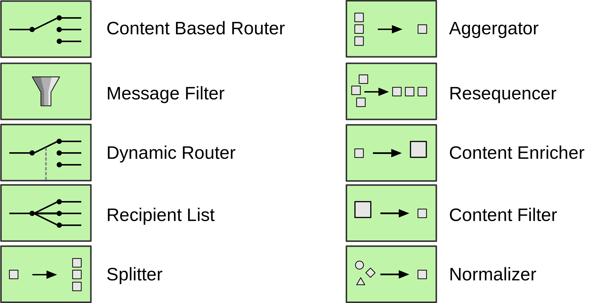
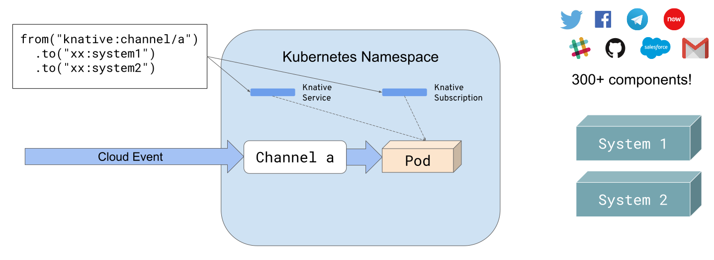
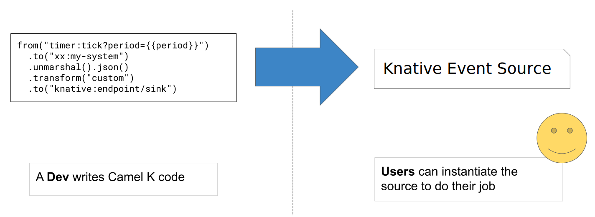

supersonic subatomic integrations
on Kubernetes and Knative
Peter Palaga


Peter Palaga
Agenda
- Apache Camel intro
- Apache Camel Quarkus
- Apache Camel K
What is Apache Camel?
http://camel.apache.org/Since 2007
Huge community
- ~500 contributors
- ~2900 stars on Github
- ~3700 forks on Github
- ~1000 subscribers on the Users mailing list
- ~9000 questions on StackOverFlow
Follow @ApacheCamel (new) on Twitter!
An integration library

Enterprise Integration Patterns (EIP)
https://www.enterpriseintegrationpatterns.com/
integrate anything
through its
~300 components
Filetypes:
|
Protocols:
|
Public Clouds:
|
Enterprise:
|
APIs:
|
Misc:
|
Domain Specific Languages (DSL)
| Java | XML |
|
|
Groovy, Scala, Kotlin, ...
Runnable on
| Standalone |
||
Apache Camel 3
|
|
What is
?
Supersonic, subatomic Java!
Why do we need
Quarkus in Camel?
- Java sucks in containers
- Serverless functions need fast startup
Camel Quarkus
- Started about a year ago inside Quarkus
- Now https://github.com/apache/camel-quarkus
- 34 components supported
- Soon on code.quarkus.io
Camel Quarkus Demo
Apache Camel K
Motivations
- Low code/no code integrations: Syndesis
- Web UI
- For "Citizen integrators"
- Integrations (Camel)
- API design (Apicur.io)
- API managemtent (3scale)
New areas of interest
- Low code/no code integrations: Syndesis
- A "glue" for Serverless Functions (read: Knative)
⮤ characterized by:
- Fast prototyping
- Simple or no business logic
- Fast startup, low memory footprint
Camel K demo
Camel K internals
kamelclient side binary- Camel K Operator
What is Kubernetes Operator?
- An Application Management concept
- Does what a human operator would have to do
- Based on declarative input
- Based on declarative input
- A pattern
- (Ex-)CoreOS Operator Framework
How it works
A running container
- Monitors the cluster via Kubernetes API
- Reacts:
- Add/remove/modify resources (pods/services/custom CRDs)
- Scale up/down
- Call endpoints of the running applications
- Implements custom logic
Custom Resource Definitions (CRD)
Built-in resources
|
CRDs
|
Camel K Operator

Image resolution (1/2)
Collect Maven dependencies based on
- DSL used (Groovy, XML, Java, Kotlin, JavaScript, YAML)
- Camel components used in the routes
Image resolution (2/2)
- Based on the found dependency set
- Either take an available Image (buildless deploy)
- Or build a new image
- Route definition not a part of the image
- Mounted to the container as a ConfigMap
Camel K on Knative
What is Knative?
- Building blocks for Serverless applications
- CRDs and operators
 |
 |
Knative Serving (1/2)

Knative Serving (2/2)

Knative Serving (2/2)

Knative Serving (2/2)

Knative Eventing
 https://cloudevents.io
https://cloudevents.io
Event Consumer

Event Consumer

Event Consumer

Event Consumer
Event Consumer

Event Source
Roles in Knative Eventing

What comes next
- Camel K 1.0.0 after Knative 1.0 and Camel 3.0.0 GA
- Quarkus as integration runtime
- Tekton builds
- BDD testing
- IDE plugins
- https://camel.apache.org
- Chat: https://gitter.im/apache/camel
- Mailing list: dev@camel.apache.org
- Follow @ApacheCamel
Feedback and contributions are welcome!